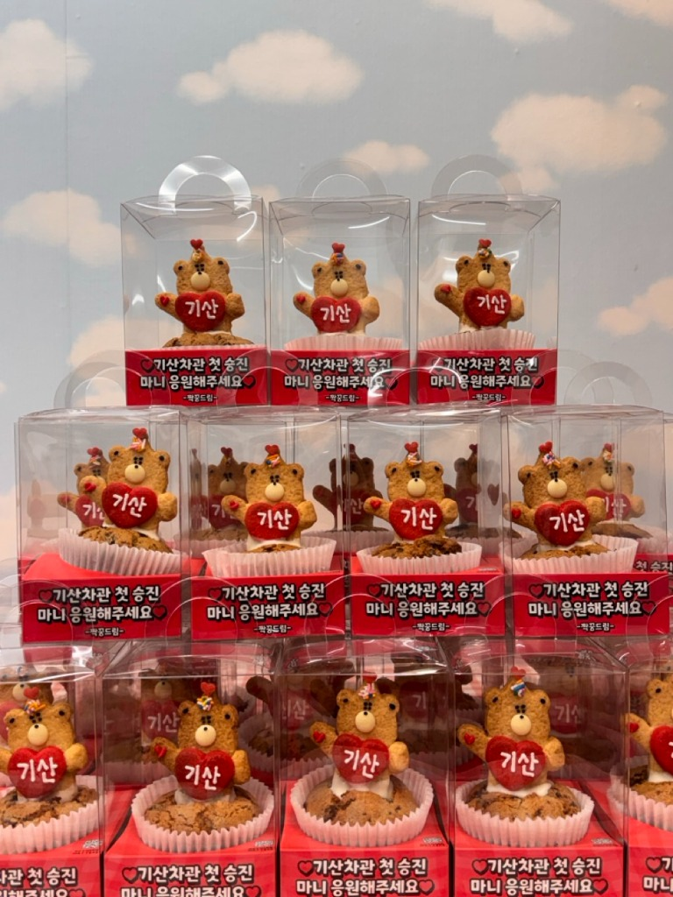

커스텀형 브라우니쿠키
퇴사답례품, 육아휴직답례품, 승진답례품처럼 짧은 문구와 기념 포인트가 필요한 경우 가장 먼저 잘 맞아요.
- 하트 문구와 스티커 포인트 가능
- 퇴사선물쿠키 흐름과 가장 잘 맞음
- 기념 이유가 분명한 답례에 적합
퇴사답례품, 육아휴직답례품, 승진답례품, 인턴퇴사선물처럼 기념 이유가 분명한 선물은 "짧은 문구가 필요한지"와 "얼마나 정갈하게 나눌지"를 먼저 보면 제품 선택이 빨라져요.

짧은 메시지가 필요한지, 아니면 깔끔하게 많이 나누는 쪽인지에 따라 먼저 볼 제품이 달라져요.
퇴사답례품, 육아휴직답례품, 승진답례품처럼 짧은 문구와 기념 포인트가 필요한 경우 가장 먼저 잘 맞아요.
문구 없이도 정갈하게 나누는 흐름이 중요하면 기본 브라우니쿠키가 더 빠르고 안정적이에요.
조금 더 가볍고 귀엽게 인사를 전하고 싶다면 행운쿠키 쪽이 더 잘 맞는 경우도 있어요.
퇴사와 승진 답례는 "기억에 남는 메시지"와 "깔끔하게 나누는 편의성" 두 가지 중 어느 쪽이 더 중요한지 먼저 보면 쉬워요.
메시지 반영 여부, 최소 수량, 어떤 제품이 더 잘 맞는지 많이 물어보세요.